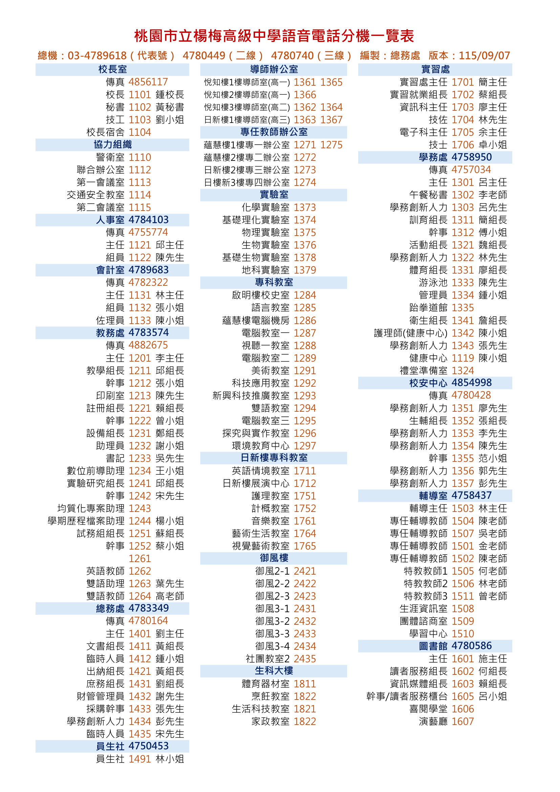

楊梅高中分機一覽表
桃園市立楊梅高級中等學校
字體調整
音效開啟
撥號模擬器
原表對照
列印
總務處編製 · 版本 115/09/07 · 即時檢索互動網
楊梅高中
電話分機一覽表
點擊分機號碼即可一鍵複製，支援即時關鍵字查詢、語音撥號音效模擬、大字體檢視與原件比對。
學校外線總機服務 (桃園市區碼 03)
撥通總機後請依語音提示直撥 4 碼分機
代表號 (代表線)
03-4789618
二線總機
4780449
三線總機
4780740
✕
全部處室
行政處室
教師辦公室
實驗與專科
特色大樓
協力與會議
⭐ 常用分機
0
載入中...
快速跳轉：
DTMF
互動撥號盤 (支援真實按鍵音)
✕
____
請點選數字撥號鍵輸入分機
1
.
2
ABC
3
DEF
4
GHI
5
JKL
6
MNO
7
PQRS
8
TUV
9
WXYZ
*
0
+
#
原版公文對照：桃園市立楊梅高級中學語音電話分機一覽表 (115/09/07)
✕
